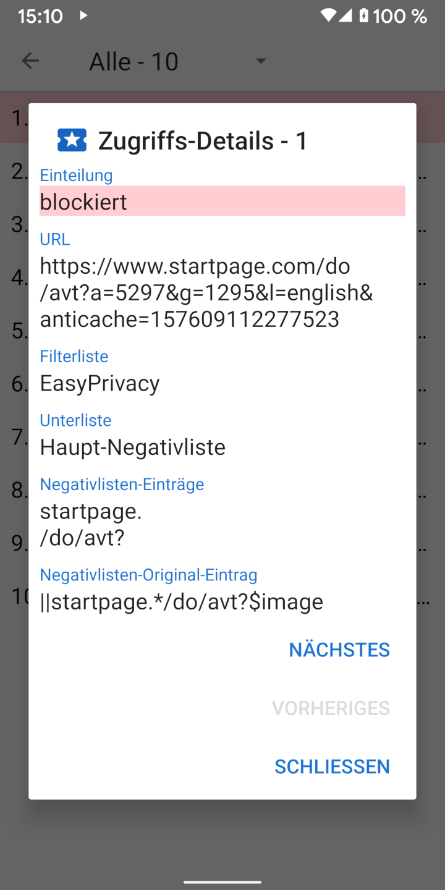

Wenn eine URL geladen wird, wird üblicherweise eine Menge Anfragen für mit der Seite verbundene Ressourcen wie Bilder, CSS-, JavaScript- und andere Dateien an den betreffenden Webserver gestellt. Details dazu können in der Ansicht "Zugriffe" betrachtet werden, welche über das Navigations-Menü links erreicht werden kann. In dieser Ansicht wird auch dargestellt, wie viele (und welche) Anfragen geblockt wurden. Durch Antippen der betreffenden Anfragen können weitere Details dazu angezeigt werden, die zeigen, warum die Anfrage erlaubt oder blockiert wurde.
Privacy Browser includes four common filter lists based on the Adblock syntax: EasyList, EasyPrivacy, Fanboy’s Annoyance List, and Fanboy’s Social Blocking List. These filter lists are processed by Privacy Browser into the following 22 sublists, which check resource requests in the order listed.
Listen mit "(URL-Anfang)" prüfen gegen den Anfang einer URL, solche mit "(URL-Ende)" gegen das Ende der URL. Domänen-Listen prüfen gegen bestimmte Domains. Drittanbieter-Listen greifen nur, wenn die Domain der Anfrage eine andere ist als die Domain der aufgerufenen URL. Listen mit regulären Ausdrücken folgen der Syntax für reguläre Ausdrücke. Jede Unter-Liste hat dabei einen oder mehrere Einträge. Bei Domänen-Unterlisten werden die Ressourcen-Zugriffe nur dann überprüft, wenn der erste Eintrag der Domain der aufgerufenen URL entspricht.
Because of limitations in Android’s WebView, and to speed up processing of requests, Privacy Browser implements a simplified interpretation of the Adblock syntax. This can sometimes lead to false positives, where resources are allowed or blocked in ways that weren’t intended by the original entry. A more detailed description of how the filter list entries are processed is available at stoutner.com.
Privacy Browser has three additional filter lists.
UltraList and
UltraPrivacy
filters ads and trackers that EasyList and EasyPrivacy do not. The third blocks all third-party requests.
A request is only considered third-party if the base domain of the request is different than the base domain of the URL.
For example, if www.website.com loads a picture from images.website.com,
this is not blocked as a third-party request because they both share the same base domain of website.com.
Blocking all third-party requests increases privacy, but this filter list is disabled by default because it breaks a large number of websites.